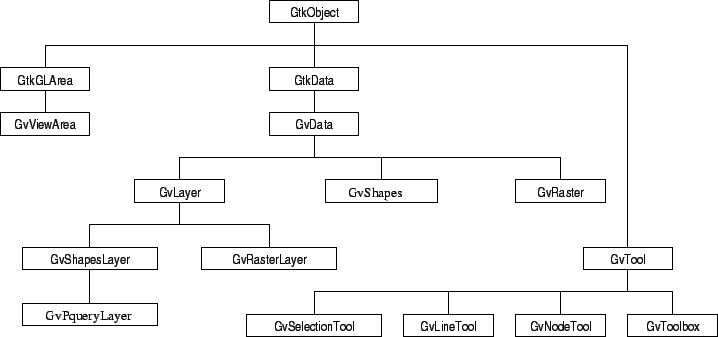
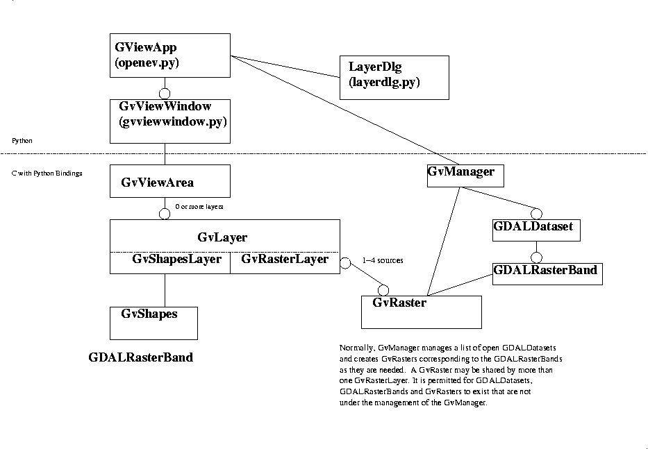
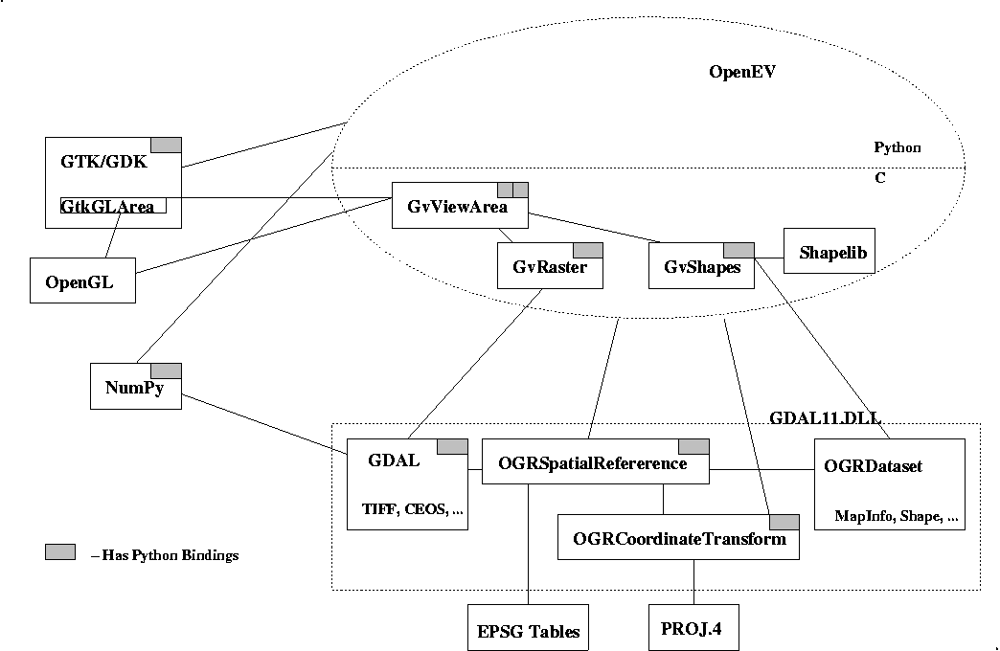

OpenEV Architecture
===================
See the library design document
for the detailed library design.
The following figure shows an inheritance diagram of the main OpenEV
classes, described below.

GvViewArea
----------
o Derived from GtkGLArea (a GTK widget for drawing with OpenGL).
o Maintains a of GvLayers (in drawing order), and a concept of which is
the "active" layer for the purposes of editing, and some other operations.
o Maintains a current view state (camera position and orientation in 3D,
zoom factor and center point in 2D),
o Provides some automatic event handling for zooming, and panning.
o Generates the "active-changed", "view-state-changed", and "gldraw" events.
GvData
------
o Derived from GtkData.
o Primarily it provides services to implement undo semantics for many
different types of objects. See Undo discussion below.
o Generates the "changing", "changed" and "meta-changed" events.
o Implements core services for managing undo "mementos".
o Also contains a properties list, a projection, a name, and a concept of
a parent.
GvShapes
--------
o Derived from GvData.
o Acts as a container for the vector objects (GvShape structures).
o Implements all sorts of create, update (ie. translate) and delete
operations.
o Implements meaningful undo for all updates, create and delete operations.
o Note that the GvShapes container has no concept of selection ... that is
a GvShapesLayer concept.
GvShape
-------
o Unlike essentially everything else described here, the GvShape is just
a simple structure, it isn't derived from GtkObject. This is intended to
keep it lightweight.
o It represents a single vector feature.
o The supported geometry types are point, line and area. Areas may have
multiple rings allowing them to have holes.
o Geometries are all 3D, though Z is usually 0.
o Each GvShape has a properties list (list of name/value pairs).
o GvShape's are reference counted.
o GvShape's do retain some rendering related information (tesselation of
areas).
GvRaster
--------
o Derived from GvData.
o Represents one band of raster data (real, or complex) - it corresponds
directly to a GDALRasterBand.
o It maintains a tile oriented cache of raster data (in addition to the
cache maintained by GDAL!). The cache of raster data is still at the
original data depth ... that is it hasn't been scaled yet.
o The GvRaster cache is also maintained in different levels of detail
(currently up to 8 levels of detail in powers of 2).
o The GvRaster implements a number of averaging methods when computing
low res overviews from high res data, but they basically devolve to
averaging or sampling.
GvLayer
-------
o Derived from GvData.
o Represents a layer of stuff that can be placed in a view (GvViewArea)
o Provides the "setup", "teardown", "draw", "get-extents" and "display-change"
methods.
GvShapeLayer
------------
o Derived from GvLayer.
o Abstract class for all the "shape editing" concepts. These are implemented
as events, the most significant of which from an outside point of view are
"selection-changed", and "subselection-changed".
o Eventually it is likely that GvShapeLayer will be merged into GvShapesLayer
when we are sure we don't want other types of layers with vector editing
semantics, and when the old GvPointLayer, GvLineLayer and GvAreaLayer are
gone.
GvShapesLayer
-------------
o Derived from GvShapeLayer
o Handles all the drawing and selection for vectors, including points, lines,
areas, text, symbols and so forth.
o Interacts with an underlying GvShapes which contains the shape (feature)
data.
o Rendering of features is based on a partial implementation of the OGR
Feature Style Specification.
GvRasterLayer
-------------
o Derived from GvLayer
o Is used to render raster layers.
o Supported modes are RGBA, Greyscale (+alpha), Pseudo-coloured, and
2D (Complex) Pseudocolored.
o The GvRasterLayer has a pseudocolor table (used only in some modes).
o Depending on the mode 1-4 GvRasters may be used for source data. The
GvRasters are called "sources" in the GvRasterLayer API, and represented
as the GvRasterSource structure.
o Each source may be set to a constant value (instead of reading from a
GvRaster). Normally the "alpha" (transparency) source is set to the
constant 255 indicating there is no transparency.
o Each source has independent scaling information (min/max), an optional
"nodata value", and a greyscale (enhancement) lut.
o Note that source raster data is read from a GvRaster, put through the
indicated scaling to 256 levels, optionally passed through the LUT and then
utliized as part of forming a GvRasterLayer image which may include it's own
pseudocolor table.
o The GvRasterLayer maintains a cache of OpenGL textures for fully rendered
data. This "texture" cache normally resides in the memory of the OpenGL
compliant video card, allowing very fast refresh of raster data. The
textures are the size of the tiles from the GvRaster ... currently hardcoded
to be 256x256 (254x254 active area due to required texture overlap).
o The GvRasterLayer maintains a mesh for each texture. This mesh describes
how the texture should be warped into "view" coordinates. The view
coordinates are normally georeferenced space (ie. UTM meters, lat/long
decimal degrees, or raw scene pixel/line). The mesh includes a Z
coordinate which is normally zero for 2d scenes.
o Normally the mesh just consists of values at the four corners of the texture
but when doing 3D modelling the mesh is generally produced at a higher
resolution (perhaps 8x8). The resolution of the mesh will dictate how
detailed a terrain can be represented; however, the more refined the mesh
the slower the rendering by OpenGL. It is prohibitively expensive in
OpenGL terms to have a mesh the same size as the raster for even a medium
sized raster.
o The GvRasterLayer tries hard to avoid "blocking" the program for very
long while loading data. This is mainly accomplished by only loading
one or a few tiles before re-rendering and returning control to the main
event loop.
Undo
----
o Discuss mementos.
Edit Tools
----------
o Discuss
Higher Level (Python) OpenEV Architecture
=========================================
The above really describes the core C services of OpenEV. It doesn't
really address how much of the high level application is composed. A
few services, and classes worthy of note include:
GvManager
---------
o Implemented in C, python interfaces in gview.py.
o Maintains application wide preferences (actually loaded by python
code in gview.py).
o Maintains a list of open GDALDatasets, and GvRasters which have been
created for the GDALRasterBands. Essentially a central "file" cache.
o Provides prioritized "idle task" services, for stuff like deferred
raster loading.
o Maintains the "busy" flag.
GvViewWindow
------------
o Derived from GtkWindow. Implemented in Python.
o Provides the standard OpenEV dialog, including a menu (optional),
iconbar (optional), tracker (optional) and scrollbars (optional).
o Provides implementation of many of the menu options.
GViewApp
--------
o Derived from Signaler ... no GUI component.
o One instance of the class must be instantiated
for an application and provides some services shared between all views.
o Maintains recently used file list.
o Manages layer dialog, and toolbar dialog.
o Creates new views (as generic GvViewWindows).
o Open a file on the current view.
o Launch preferences panel, toolbar, python shell, etc. Basically lots
of dialogs of which there should be once instance for the application.

Toolbar
-------
Standard (OpenEV) editing toolbar.
The following figure shows how OpenEV, GDAL, GTK, Python, etc. fit together.

Next
Frank's Course Outline
OpenEV Help